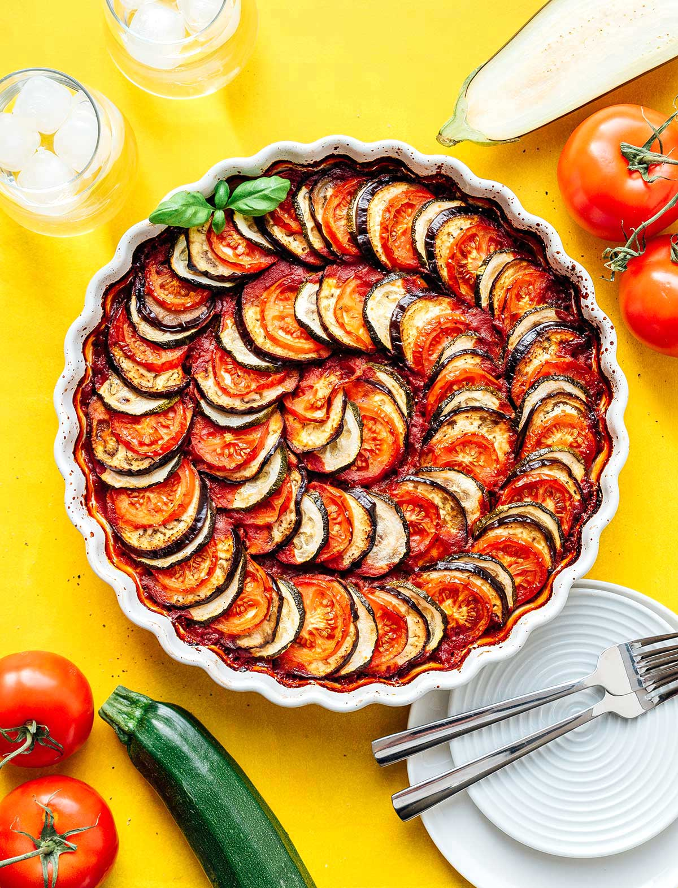

Ratatouille

A definitive dish that every modern cook should master.
In this classic Provençal dish, summer vegetables, like eggplant, onions, peppers, tomatoes and zucchini, are covered in olive oil and roasted separately,
then all together, until they become a soft, harmonious stew. This recipe calls for seeding and peeling the tomatoes, which is a bit of work.
But it’s worth it for the intensity of flavor and the velvety texture. Ratatouille takes some time to make, and tastes better the next day, so plan ahead.
The upside is that it’s a perfect make-ahead dish for a party. You can store it in the refrigerator for up to 5 days, then gently reheat it,
or bring it to room temperature before serving.
Ingredients
- 4 garlic cloves
- 2 medium white onions
- 3 medium zucchini
- 2 medium eggplant
- 3 sweet red peppers
- 3 sprigs fresh rosemary
- 6 sprigs fresh thyme
- 1 cup olive oil, more as needed
- 2 large heirloom or beefsteak tomatoes
- 2 small bay leaves, ripped in half
- 1 1/2 teaspoons fine sea salt, more as needed
- Freshly ground black pepper
Steps
- Heat oven to 350 degrees.
- Prepare the vegetables: Smash and peel 3 garlic cloves, reserving the 4th. Halve onions through their roots, and slice halves into ¼-inch-thick pieces. Slice zucchini into ¼-inch-thick rounds. Cut eggplant into 1-inch cubes or spears. Seed peppers, and cut them into ¼-inch-thick strips.
- Spread each vegetable on a separate rimmed baking sheet (use extra sheets as necessary). Add the 3 cloves of smashed garlic to the onion pan. Add 1 sprig rosemary and 2 sprigs thyme to each of the pepper, eggplant and zucchini pans. Sprinkle salt lightly over vegetables. Drizzle 3 tablespoons olive oil on each of the pans.
- Place all the pans in the oven (or work in batches if they don’t fit at once). Cook until vegetables are very tender and lightly browned at the edges. This will take about 35 to 40 minutes for the peppers (their skins should shrivel), 40 to 45 minutes for the eggplant and zucchini (the eggplant should crisp slightly and the zucchini should be well cooked, so let them go 3 to 5 minutes longer than you normally might), and 60 to 65 minutes for the onions. Don’t worry about the vegetables being pretty; they will meld into the ratatouille. Shake or stir the pans every 15 to 20 minutes or so, especially the onions.
- In the meantime, prepare the tomatoes: Bring a large pot of water to a boil. Add tomatoes and blanch until the skins split, about 10 seconds. Use a slotted spoon to quickly transfer the tomatoes to a bowl filled with ice water.
- Using a paring knife, peel the cooled tomatoes (the skins should slip right off). Halve tomatoes across their equators. Set a sieve over a bowl. Working over the bowl, use your fingers to seed the tomatoes, letting the seeds catch in the sieve and the juice run into the bowl. Discard seeds but save juices. Dice tomatoes and add to the reserved juices in bowl.
- Finely grate or mince remaining garlic clove. Add garlic to tomatoes along with bay leaves and a large pinch of salt. Set aside.
- Once vegetables are done cooking, combine them on one baking sheet or a large shallow baking dish and add ingredients from tomato bowl. Toss well. Vegetables will be stacked, and that’s O.K. Cover generously with olive oil, using remaining ¼ cup oil or more, and sprinkle with salt. Everything should have a good coat of oil, but should not be drowning in it. Cook at least 1 hour, stirring every 15 to 20 minutes, until vegetables are very tender and imbued with juices and oil. Add salt and pepper to taste, then serve warm, or let cool.